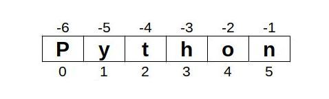
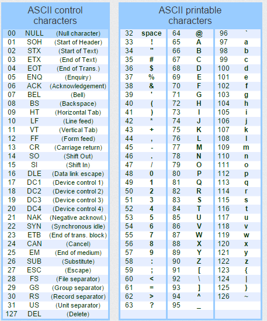

Sequenze
Una sequenza è intuitivamente una collezione di elementi messi "in fila". Pur potendo considerare, in siffatte strutture, tipologie di oggetti anche molto diversi (anche fra loro, all'interno della stessa sequenza) ci sono una serie di operazioni che funzionano comunque in questo contesto: ad esempio contare gli elementi presenti nella sequenza o verificare se un certo elemento è presente all'interno della stessa.
Le operazioni che adesso andiamo ad elencare sono comuni a tutte le sequenze.
Nella tabella seguente
x, y, z sono elementi possibilmente presenti in una sequenza,
s e t sono sequenze di esempio,
i, k, n sono numeri interi.
| Comando o Funzione | Descrizione |
|---|---|
| x in s | True se un elemento di s è uguale a x, altrimenti False |
| x not in s | False se un elemento di s è uguale a x, altrimenti True |
| s + t | La sequenza prodotta dalla concatenazione di s e t |
| s * n oppure n * s | La sequenza prodotta dalla concatenazione di s con se stessa per n volte |
| s [ i ] | L'elemento della sequenza s al posto i, considerando che il primo elemento della sequenza si trova al posto ZERO. |
| len (s) | Numero di elementi di s, lunghezza di s |
| min (s) | Elemento più piccolo di s |
| max (s) | Elemento più grande di s |
| s.count (x) | Numero di volte in cui x compare nella sequenza s |
| s.index (x) | La prima posizione della sequenza s ove si trova l'elemento x. Ritorna errore se l'elemento non è presente. |
Ora... queste operazioni sembrano molto generiche come il concetto stesso di "sequenza". Allora, per partire con un esempio semplice pensiamo così: una stringa non è altro che una sequenza di caratteri!!
Più precisamente... le stringhe sono definite in Python come delle sequenze immutabili di caratteri. Lasciamo a dopo il significato di immutabile e concentriamoci sul fatto che sono sequenze: supportano tutte le operazioni che abbiamo appena elencato.
Facciamo degli esempi per illustrare il concetto:
Altro esempio:
Altro esempio:
Per quanto riguarda l'operatore sequenza[intero] che ci permette
di visualizzare l'elemento al posto richiesto, vanno precisate alcune
cose:
- il primo elemento è l'elemento al posto ZERO
- Andando avanti ogni elemento si trova (ovviamente) al posto successivo
Vediamo un esempio:
nome = "Leonardo"
print("Al posto 0 troviamo: ", nome[0])
print("Al posto 4 troviamo: ", nome[4])
print("Al posto 8 troviamo: ", nome[8])
# Scrive:
# Al posto 0 troviamo L
# Al posto 4 troviamo a
# Al posto 8 troviamo ERRORE!!!
Va inoltre specificato che la numerazione degli elementi di una sequenza funziona anche con i numeri negativi, dove:
- l'ultimo elemento è quello al posto -1
- il penultimo è quello al posto -2
- .. e così via fino al primo elemento
Ancora un esempio:
cognome = "Da Vinci"
print("All'ultimo posto: ", cognome[-1])
print("Al penultimo posto: ", cognome[-2])
print(". . ." , cognome[-9])
# Scrive:
# All'ultimo posto: i
# Al penultimo posto: c
# . . . ERRORE!!!
Riassumendo il concetto con un disegno, inizializzata una stringa, le posizioni degli elementi si contano come in figura:

La funzione len(sequenza) ci dice il numero di elementi della stessa.
print(linguaggio , "contiene" , len(linguaggio) , "caratteri")
# scrive "Python contiene 6 caratteri"
La funzione sequenza.count(elemento) ci dice quante volte un
elemento compare in una sequenza.
prova = "Buonasera"
print("Quante 'a' in " , prova , ":" , prova.count('a') )
print("Quante 't' in " , prova , ":" , prova.count('t') )
# scrive:
# Quante a in Buonasera: 2
# Quante t in Buonasera: 0
Attenzione
Attenzione alla differenza fra maiuscole e minuscole!!!
La funzione sequenza.index(elemento) ritorna la prima posizione in cui si trova un elemento ed errore se l'elemento non è
presente, quindi ATTENZIONE!!!
Mentre...
Per assicurarci che la funzione index() non dia errore bisogna controllare la presenza o meno della variabile nella parola:
Le funzioni min(sequenza) e max(sequenza) ci ritornano rispettivamente l'elemento minore e maggiore della sequenza.

Se, come spero, grazie agli esempi sopra le funzioni tipiche delle sequenze saranno molto più chiare, rimane ancora un mistero da svelare, ovvero per quale assurdo motivo la lettera più piccola (min) della parola "Gianmarco" sia la "G" invece della 'a'? Non funziona l'ordine alfabetico?
Questo funzionamento dipende dal fatto che i caratteri sono memorizzati all'interno dei nostri dispositivi come sequenze numeriche e la corrispondenza numero-lettera è data dal cosiddetto codice ASCII.
Guardate l'immagine sul codice ASCII che riporta i caratteri stampabili in una tabella: come si desume osservandola, le lettere maiuscole, ordinate secondo l'alfabeto tradizionale, vengono tutte prima delle minuscole e secondo il confronto numerico sono da considerarsi "più piccole".
Lavorare con le sequenze
Quando vogliamo controllare se un valore si trova in una sequenza,
abbiamo capito di poter ricorrere all'operatore in all'interno di una
istruzione condizionale, un if-else:
parola = input("Inserisci una parola")
if "a" in parola:
print("la parola che hai scritto contiene la 'a'")
else:
print("la parola che hai scritto NON contiene la 'a'")
A seconda della parola che l'utente inserisce ci aspettiamo una risposta diversa. Questo perché l'istruzione elemento in sequenza ritorna un valore boolean che può essere True o False esattamente come serve al comando if.
Questo controllo funziona con qualunque stringa: ad esempio funziona benissimo anche per la ricerca delle sottostringhe:
if "gn" in parola:
print("la parola che hai scritto contiene la 'gn'")
else:
print("la parola che hai scritto NON contiene la 'gn'")
C'è però un altro metodo di applicare l'operatore in alle sequenze che è quello del comando for..in:
Scrive:
o
g
g
i
Come si desume osservando l'esempio, il comando FOR elemento IN sequenza scorre tutta la sequenza, assegnando ogni volta alla
variabile ausiliaria elemento il valore di uno degli elementi della sequenza.
Se invece vogliamo scorrere le posizioni dobbiamo muoverci con un ciclo FOR...IN RANGE(), Infatti una sequenza è lunga len(sequenza)
elementi e i suoi elementi sono numerati da 0 a len(sequenza) - 1, esattamente come si comporta la funziona range(len(sequenza)).
parola = "oggi"
for pos in range(len(parola)):
print("posizione" , pos , ":" , parola[pos])
Scrive:
posizione 0: o
posizione 1: g
posizione 2: g
posizione 3: i
Facile e comodo. Tutto chiaro?
Esercizi sulle stringhe
NO IA
Gli esercizi di questo gruppo servono solo per la comprensione dei concetti illustrati. Se non si riesce a farli significa che occorre studiare meglio i concetti sopra. Inutile in questo contesto affidarsi alle IA per la risoluzione degli stessi!!!
Negli esercizi che seguono dobbiamo ricordare che le stringhe in Python
non sono altro che un tipo particolare di sequenza (di caratteri).
Aggiungo inoltre che per ogni necessità ulteriore ci sono sempre le
funzioni dir() e help().
Esercizio 401
Chiedere all'utente di inserire una stringa e visualizzarla. Poi visualizzare i caratteri che compongono la stringa uno per riga.
Esercizio 402
Chiedere all'utente di inserire una stringa e visualizzarla. Poi visualizzare il numero di caratteri presenti nella stringa inserita.
Esercizio 403
Chiedere all'utente di inserire una stringa e visualizzarla.
Chiedere successivamente di inserire un carattere (verificare che sia un solo carattere!) e verificare se esso è presente nella stringa inserita.
Infine verificare se il carattere è presente nell'altro caso (ad esempio se l'utente inserisce il carattere "a" ma nella stringa è presente il carattere "A").
(suggerimento: guarda dir(str) e help(str.upper) oppure help(str.lower)).
Esercizio 404
Chiedere all'utente di inserire il proprio nome, da salvare in una variabile e successivamente il proprio cognome, da salvare in un'altra variabile. Creare la variabile nominativo che contiene il nome inserito, uno spazio e il cognome inserito. Visualizzare la variabile nominativo così creata.
Esercizio 405
Chiedere all'utente di inserire una frase e un numero intero. Poi visualizzare la frase inserita per quel numero di volte.
Esercizio 406
Chiedere all'utente di inserire una frase e un numero intero. Poi creare una stringa che contiene la frase , uno spazio, la frase, uno spazio, la frase, uno spazio... per il numero di volte inserito dall'utente. L'ultimo spazio non va inserito!!!
Ad esempio, dato "cane" e 3, la stringa da creare sarà "cane cane cane". Non basta visualizzarla: il valore va assegnato ad una variabile.
Visualizzare la stringa così creata.
Esercizio 407
Chiedere all'utente di inserire una stringa e visualizzarla tutta scritta in caratteri maiuscoli.
(suggerimento: guarda dir(str) e help(str.upper))
Esercizio 408
Chiedere all'utente di inserire una stringa e visualizzarla tutta scritta in minuscolo con iniziali maiuscole per ogni parola.
(suggerimento: guarda dir(str) e help(str.title))
Esercizio 409
Chiedere all'utente di inserire una stringa e visualizzarla. Chiedere successivamente di inserire un carattere e contare quante volte il carattere è presente nella stringa inserita.
Ripetere lo stesso calcolo ignorando il caso, ovvero contando le lettere minuscole e/o maiuscole presenti.
Esercizio 410
Chiedere all'utente di inserire una stringa e visualizzarla. Contare le vocali (maiuscole e minuscole) presenti nella stringa. (Come si fa??)
Esercizio 411
Chiedere all'utente di inserire una stringa e visualizzarla. Successivamente verificare se la stringa inizia oppure no con una vocale.
Esercizio 412
Chiedere all'utente di inserire una frase e visualizzarla in modo tale che ogni volta che si incontra uno spazio si vada a capo.
(suggerimento: help(print) )
Questo esercizio va fatto modificando il comportamento della funzione print().
Chiedetemi se l'help non vi risulta troppo chiaro!
Esercizio 413
Chiedere all'utente di inserire il proprio nome. Se esso termina per 'o' visualizzare la frase "Sei un maschio?". Se esso termina per "a" visualizzare la frase "Sei una femmina?". In tutti gli altri casi visualizzare la frase "Sei un maschio o una femmina?".
Esercizio 414
Chiedere all'utente di inserire una stringa e visualizzarla. Successivamente chiedere all'utente di inserire un carattere e verificare se esso è presente nella stringa. Se è presente, chiedere un secondo carattere e rimpiazzare nella stringa tutte le occorrenze del primo carattere con il secondo.
(Suggerimento: help(str.replace) )
Esercizio 415
Chiedere all'utente di inserire una stringa e visualizzarla. Successivamente visualizzare il carattere più volte presente nella stringa.
Esercizio 416
Chiedere all'utente di inserire un numero intero N e calcolare il valore decimale di 1/N. Le sue cifre decimali contengono la cifra 9? In quale posizione?
(Suggerimento: calcolare 1/N come float, poi convertirlo in stringa e...)
Esercizio 417
Dichiarare la stringa alfabeto, contenente tutte le lettere dell'alfabeto, la stringa numeri, contenente tutte le cifre da 0 a 9 e la stringa alfanumerici, contenenti tutti i caratteri di punteggiatura diversi che riuscite ad inserire in una stringa.
Chiedere all'utente di inserire una stringa e dire se essa contiene lettere, cifre, caratteri alfanumerici o spazi.
Esercizio 418
Chiedere all'utente di inserire una stringa e visualizzarla. Visualizzare le vocali presenti nella stringa. Visualizzare la posizione delle vocali presenti nella stringa.
Esercizio 419
Chiedere all'utente di inserire una frase qualsiasi, lunga a piacere. Visualizzare la stringa inserita.
Chiedere poi all'utente di inserire un carattere a piacere, verificando che sia una lettera e che sia solo uno. Ad esempio "f" va bene (lettera singola), "?" non va bene (no lettera), "fa" non va bene (2 lettere). Contare quante volte il carattere è presente nella frase (minuscolo e maiuscolo).
Permettere all'utente di inserire un nuovo carattere singolo e sostituire le occorrenze del carattere precedente con il nuovo, visualizzando la stringa risultante
Ad esempio, inserita la stringa "buonasera" e indicato prima il carattere "a" e successivamente il carattere "g" dovrà essere visualizzata la stringa "buongserg".
Tuple
Python fornisce un tipo predefinito, chiamato tupla, per indicare una sequenza immutabile di oggetti, di solito diversi fra loro anche per tipo.
In Python, un tipo di dato si dice immutabile se, una volta definito il suo valore, esso non può essere modificato.
Viceversa un tipo di dato si dice mutabile se il suo valore può essere modificato anche dopo essere stato definito.
Essendo la tupla un tipo sequenza, essa supporta tutte le operazioni definite per le sequenze e visionate poco fa per le stringhe.
Una tupla si definisce elencando dentro le parentesi tonde una serie di valori separati da virgola:
Come dicevamo, per le tuple valgono tutte le operazioni tipiche delle sequenze:
Possiamo controllare la presenza di un valore con IN:
num = int(input("Inserisci un numero: "))
if num in tabellina7:
print(num,"fa parte della tabellina del 7")
Oppure visualizzare i valori con un ciclo:
Scrive:
7
14
21
28
35
42
49
56
63
70
Facciamo un altro esempio con valori eterogenei:
scrive:
( "ciao" , 12 , 23.45, 1000000 , 12, "come??" )
Ricordo che i valori presenti in una sequenza sono numerati dal primo all'ultimo a partire da zero, quindi:
A occhio sembrano abbastanza facili! Attenti però...
In Python la definizione di una tupla non richiede espressamente le parentesi tonde, basta elencare i valori con la virgola. Ecco allora che lo studente sprovveduto potrebbe scrivere:
scrive:
( 3 , 14 )
mentre:
scrive:
3.14
ATTENZIONE!!!
pigreco è una tupla NON un valore reale!
In Python il separatore decimale è il punto NON la virgola!!!
Quando si usano le tuple è sempre meglio utilizzare sempre le parentesi tonde per evitare spiacevoli equivoci!!!
La caratteristica delle tuple di essere immutabili non limita comunque la possibilità di inserirvi dati via codice: basta semplicemente usare qualche accortezza!
nome = input("Inserisci nome: ")
cognome = input("Inserisci cognome: ")
datiPersonali = ( nome , cognome )
num = int ( input("Inserisci numero: ") )
tabellina = (num*1 , num*2 , num*3 , num*4 , num*5 , num*6 , num*7 , num*8 , num*9 , num*10)
es1 = (1,)
es2 = (1)
print("es1:",es1, type(es1))
print("es2:",es2, type(es2))
scrive:
es1: (1,) <class 'tuple'>
es2: 1 <class 'int'>
In realtà, con un po' di furbizia e la sintassi giusta, è possibile anche "modificare" una tupla:
tupla = ()
for i in range(10):
# questo codice OGNI volta crea una nuova tupla aggiungendo (i) in fondo al valore della precedente
# es: (1,2) + (3,) diventa la tupla (1,2,3)
tupla += (i,)
print(tupla)
( 0 , 1 , 2 , 3 , 4 , 5 , 6 , 7 , 8 , 9 )
Spero sia tutto sufficientemente chiaro!
Per schiarirsi definitivamente le idee... ci sono gli esercizi :)
Esercizi sulle Tuple
NO IA
Gli esercizi di questo gruppo servono solo per la comprensione dei concetti illustrati. Se non si riesce a farli significa che occorre studiare meglio i concetti sopra. Inutile in questo contesto affidarsi alle IA per la risoluzione degli stessi!!!
Esercizio 421
Dichiarare una tupla con i nomi dei giorni della settimana. Visualizzare la tupla con una print, poi visualizzare la stessa con un ciclo, visualizzando i giorni uno per riga.
Alla fine visualizzare il numero degli elementi della tupla con la funzione len.
Esercizio 422
Dichiarare una tupla con i nomi di alcuni dei propri parenti. Chiedere all'utente di inserire un nome e verificare se la persona ha lo stesso nome di un proprio parente. Visualizzare il risultato, confermando la ricerca visualizzando anche l'elenco dei propri parenti con un elenco intervallato da virgole.
Ad esempio se la tupla contiene ("gino", "pino") e l'utente
inserisce il nome "dino", visualizzare una frase tipo: "dino" non
può essere mio parente, infatti i miei parenti si chiamano: "gino", "pino".
Esercizio 423
Dichiarare una tupla con i nomi dei mesi.
Chiedere all'utente di inserire una data digitando i numeri per giorno,
mese, anno (ad esempio: 16 , 10 , 2020). Utilizzare la tupla con i
nomi dei mesi per visualizzare la data nella forma "16 ottobre 2020".
Esercizio 424
Dichiarare una tupla con i nomi dei nani, senza visualizzarla! Chiedere all'utente di inserire i nomi dei nani e verificare se li sa tutti oppure si sbaglia.
Esercizio 425
Dichiarare una tupla che contiene la tabellina del 5 e poi scrivere un ciclo per visualizzarla nella forma:
Esercizio 426
Chiedere all'utente di inserire un numero intero fra 2 e 15 (da verificare) e dichiarare la tupla che contiene la tabellina del numero inserito.
Visualizzare la tupla così creata.
Esercizio 427
Chiedere all'utente di inserire i propri dati personali relativi a: nome, cognome, sesso, luogo di nascita. Poi dichiarare una tupla contenente queste 4 informazioni. Ripetere l'operazione per 3 persone. Alla fine devono rimanere nelle variabili tutti i dati inseriti!
(sfida: provate a farlo con un ciclo, in modo da non dover ripetere le operazioni...)
Esercizio 428
Chiedere all'utente di inserire un numero reale in una variabile chiamata "real" e dichiarare la tupla così definita:
tupla = ( real * -1 , 0 , real , real * 3 , real * 0.5 )
Visualizzare la tupla così ottenuta e visualizzare il valore più piccolo e più grande di essa.
Esercizio 429
Chiedere all'utente di inserire 5 numeri reali e al termine dell'inserimento visualizzare la tupla composta dai numeri inseriti dall'utente.
Chiedere all'utente di inserire un altro numero e verificare se esso sia presente nella tupla. In caso positivo visualizzare la prima posizione ove esso è presente.
Esercizio 430
Chiedere all'utente di inserire una stringa e un numero intero positivo (verificare). Creare la tupla contentente la stringa per numero volte.
Ad esempio, inserito "ciao" e 4 va creata la tupla ("ciao","ciao","ciao","ciao").
Chiedere all'utente di inserire due stringhe e un numero intero positivo (verificare). Creare la tupla contentente le due stringhe per numero volte.
Ad esempio, inseriti "pippo" , "ciccio" e 3 va creata la tupla ("pippo", "ciccio", "pippo", "ciccio", "pippo", "ciccio").
Esercizio 431
Chiedere all'utente di inserire 5 numeri interi e creare una tupla contenente questi 5 numeri. Visualizzare la tupla con una semplice print. Chiedere all'utente di inserire un numero qualsiasi e visualizzare la frase: "il numero inserito è presente nella tupla per TOT volte". Ovviamente TOT va calcolato...
Liste
Python fornisce un tipo predefinito, chiamato lista, per indicare una sequenza mutabile di oggetti, solitamente omogenei fra loro per tipo.
Le liste vengono definite in fase di dichiarazione utilizzando le parentesi quadre per racchiudere l'elenco degli argomenti. Ancora una volta ricordo che le liste sono un altro tipo sequenza e che quindi supportano tutte le proprietà definite per esse.
lista = [ 13, 8, 6, 11, 13, 22 ]
print(lista) # scrive [ 13, 8, 6, 11, 13, 22 ]
lista[1] # vale 8
max(lista) # vale 22
Le liste sono oggetti mutabili, ovvero tali per cui è possibile cambiarne il valore. Ad esempio:
quadrati = [0, 1, 4, 10, 16, 25] # oops...
quadrati[3] = 9
print(quadrati) # scrive [0, 1, 4, 9, 16, 25]
Questa caratteristica di essere sequenze mutabili fornisce alle liste alcune funzionalità aggiuntive per la manipolazione semplice degli elementi delle stesse.
Le funzioni che seguono sono caratteristiche solo delle liste e si aggiungono a tutte le funzionalità che derivano dal loro essere delle sequenze.
| Funzione | Descrizione |
|---|---|
| list.append( elem ) | Aggiunge elem in fondo alla lista. |
| list.insert( index , elem ) | Inserisce elem al posto index della lista, spostando in avanti i successivi |
| list.pop( index = -1) | Rimuove e restituisce elemento al posto index (oppure l'ultimo) |
| list.remove( elem ) | Trova e rimuove (la prima istanza di) elem dalla lista. |
| list.sort() | Ordina la lista (se possibile) in senso crescente |
| list.reverse() | Inverte l'ordine degli elementi della lista |
| list.copy() | Crea e restituisce una copia della lista |
| list.clear() | Rimuove tutti gli elementi dalla lista |
Vediamo ancora alcuni esempi per chiarire il funzionamento dei metodi descritti:
# list.append(x) aggiunge l'elemento x in fondo alla lista
lettere = [ 'c' , 'a' , 's' , 'o' ]
lettere.append('!')
print(lettere) # scrive [ 'c' , 'a' , 's' , 'o' , '!' ]
# list.insert(n , x) inserisce l'elemento x al posto n della lista
# lettere vale [ 'c' , 'a' , 's' , 'o' , '!' ]
lettere.insert(3,'c')
print(lettere) # scrive [ 'c' , 'a' , 's' , 'c' , 'o' , '!' ]
# list.pop() estrare e ritorna l'ultimo elemento della lista
# lettere vale [ 'c' , 'a' , 's' , 'c' , 'o' , '!' ]
print(lellere.pop()) # scrive !
print(lettere) # scrive [ 'c' , 'a' , 's' , 'c' , 'o' ]
# list.pop(n) estrare e ritorna l'elemento al posto n della lista
# lettere vale [ 'c' , 'a' , 's' , 'c' , 'o' ]
print(lellere.pop(1)) # scrive a
print(lettere) # scrive [ 'c' , 's' , 'c' , 'o' ]
# list.remove(x) rimuove la prima occorrenza di x dalla lista
# lettere vale [ 'c' , 's' , 'c' , 'o' ]
lettere.remove('c')
print(lettere) # scrive [ 's' , 'c' , 'o' ]
Nota!
remove() elimina solo la prima occorrenza dell'elemento
# list.sort() ordina la lista stessa, senza ritornare nulla!!!
# lettere vale [ 's' , 'c' , 'o' ]
lettere.sort()
print(lettere) # scrive [ 'c' , 'o' , 's' ]
# list.reverse() rovescia l'ordine degli elementi della lista
# lettere vale [ 'c' , 'o' , 's' ]
lettere.reverse()
print(lettere) # scrive [ 's' , 'o' , 'c' ]
# list.clear() cancella la lista
# lettere vale [ 's' , 'o' , 'c' ]
lettere.clear()
print(lettere) # scrive [], la lista vuota
Ho lasciato per ultimo 2 esempi per far capire la necessità del metodo copy() che restituisce una copia della lista pronta per essere assegnata ad una nuova variabile.
list1 = [1 , 2 , 3]
list2 = list1
list2[0] = 5
print(list1)
[ 5 , 2 , 3 ]
list1 = [1 , 2 , 3]
list2 = list1.copy()
list2[0] = 5
print(list1)
[ 1 , 2 , 3 ]
Spero sia chiaro! Capisco che queste cose non siano esattamente banali... ma fortunatamente è possibile verificare chiaramente su uno ha davvero capito!
Basta provare il codice degli esempi e provare a fare gli esercizi!
Esercizi sulle liste
NO IA
Gli esercizi di questo gruppo servono solo per la comprensione dei concetti illustrati. Se non si riesce a farli significa che occorre studiare meglio i concetti sopra. Inutile in questo contesto affidarsi alle IA per la risoluzione degli stessi!!!
Esercizio 441
Dichiarare una lista vuota e procedere ad inserire al suo interno tramite un ciclo i primi 30 numeri interi. Visualizzare la lista così ottenuta.
Calcolare la somma dei numeri della lista e visualizzarla.
Esercizio 442
Dichiarare una lista vuota e procedere ad inserire al suo interno tramite codice la tabellina del 3. Visualizzare la lista così ottenuta, in modo da enunciare la tabellina come alle elementari:
3 per 1 = 3
3 per 2 = 6
. . .
Esercizio 443
Dichiarare una lista vuota e chiedere all'utente di inserire un numero intero. Riempire la lista con la tabellina di quel numero. Visualizzare la lista così ottenuta.
Esercizio 444
Dichiarare una lista vuota e riempirla con i primi 20 numeri dispari. Visualizzare la lista così ottenuta. Successivamente procedere ad eliminare dalla lista tutti i numeri multipli di 3. Visualizzare gli elementi eliminati dalla lista e alla fine della procedura la lista rimanente dei dispari che non sono multipli di 3.
Esercizio 445
Dichiarare una lista vuota e permettere all'utente di digitare 7 numeri (interi o reali) da inserire nella lista. Alla fine dell'inserimento visualizzare la lista così ottenuta. Visualizzare successivamente il valore più piccolo e il valore più grande inseriti nella lista.
Esercizio 446
Permettere all'utente di inserire numeri interi finché non digita ZERO. Inserire man mano i numeri in una lista (lo zero non va inserito). Alla fine dell'inserimento visualizzare la lista così ottenuta. Visualizzare inoltre il numero di elementi presenti nella lista e la somma dei numeri della stessa.
Esercizio 447
Dichiarare una lista di numeri interi e visualizzare un istogramma orizzontale di asterischi della lista stessa. Ad esempio, data la lista [ 3 , 7 , 5 ] visualizzare:
***
*******
*****
Esercizio 448
Dichiarare le due liste vuote "listaParole" e "listaLunghezzaParole". Permettere all'utente di inserire 10 parole, da memorizzare nella prima lista e calcolare successivamente la lunghezza di ogni parola per riempire la seconda lista. Infine visualizzare entrambe le liste, meglio se con una serie di frasi tipo:
la parola `listaParole[num]` è lunga `listaLunghezzaParole[num]` caratteri.
Esercizio 449
Dichiarare una lista vuota e fare inserire all'utente un intero positivo (da verificare) che rappresenterà il numero di elementi da inserire nella lista. Permettere successivamente all'utente di inserire quella quantità di numeri interi. Visualizzare la lista così ottenuta. Procedere infine a visualizzare le posizioni della lista in cui si trovano dei numeri pari.
Esercizio 450
Data una lista di 20 interi, da riempire a piacere tramite codice:
- visualizzare la lista completa
- visualizzare la somma di tutti gli elementi che sono multipli di 3
- visualizzare la somma di tutti gli elementi che sono contemporaneamente multipli di 2 e di 3.
- contare gli elementi pari.
- visualizzare gli elementi in posizione pari.
- dato un numero intero a, visualizzare tutti gli elementi nelle posizioni multiple del numero.
- calcolare la somma e la media dei valori contenuti nella lista
Esercizio 451
Dichiarare una lista vuota e permettere all'utente di inserirvi 5 numeri reali. Visualizzare la lista così ottenuta. Successivamente ordinare la lista in senso crescente e visualizzarla ordinata.
Rovesciare la lista e visualizzarla così ordinata in senso decrescente.
Esercizio 452
Dichiarare una lista vuota e permettere all'utente di inserirvi 5 numeri reali. Visualizzare la lista così ottenuta. Procedere ad una copia della lista in una nuova lista chiamata listaOrdinata e procedere al suo ordinamento in senso crescente.
Procedere ad una copia della lista originale in una terza lista chiamata listaDecrescente e procedere al suo ordinamento in senso decrescente.
Visualizzare le 3 liste così ottenute.
Esercizio 453
Scrivere un programma Python che inizializza una lista con i primi 100 numeri primi.
Esercizi sulle sequenze
Gli esercizi qui presenti coinvolgono in maniera più o meno casuale tutti i tipi sequenza e concludono idealmente lo studio delle stesse: riuscire in questi significa essere pronti per la verifica su questi argomenti (molti di questi esercizi sono tratti dalle verifiche degli scorsi anni).
Attenzione alle IA
Capisco la tentazione di aiutarsi nella risoluzione tramite le IA. Ricordate però che sarete valutati sulla comprensione di quanto avete consegnato. Come hai svolto un certo esercizio e perché lo hai svolto in quel modo...
Buon lavoro!
Numeri casuali
Spesso ritorna utile (per gli esercizi) riempire una lista con una serie di numeri casuali tramite codice, in modo da poter evitare di fare l'inserimento a mano.
# questo codice riempe una lista vuota con 100 elementi interi, ognuno compreso fra 1 e 50
# serve per generare i numeri "casuali"
import random
# la lista da riempire
lista = []
for n in range(100):
# random.randint(A,B) genera numeri "casuali" fra A e B (entrambi gli estremi inclusi!!!)
numero = random.randint(1,50)
lista.append(numero)
# visualizzo il risultato. Già fatto!!!
print(lista)
Più avanti approfondiremo questi concetti! Per adesso... usateli per comodità
Esercizio 481
Creare una lista vuota e riempirla con 100 interi casuali compresi fra 1 e 50. Visualizzare la lista con 100 elementi. Procedere poi a rimuovere tutti i valori duplicati dalla lista.
Visualizzare la lista con tutti valori unici (ovvero senza elementi duplicati).
Esercizio 482
Chiedere all'utente un numero intero compreso fra 1 e 100 (da verificare) e procedere alla sua visualizzazione in lettere.
Ad esempio, dato 132 si fa ripetere l'inserimento per un numero fra 1 e 100. Dato 75, si visualizzi la scritta "settantacinque".
Esercizio 483
Dichiarare una tupla con i nomi delle dita delle mani e una con i nomi delle dita dei piedi (li sai??). Poi visualizzare entrambe in parallelo. Una cosa tipo:
| DITO | MANO | PIEDE |
|---|---|---|
| Primo | pollice | alluce |
| Secondo | indice | illice |
| ... | ... | ... |
Esercizio 484
Dichiarare una lista vuota e riempirla con 20 numeri casuali (libreria random) compresi fra 1 e 100. Visualizzare la lista così ottenuta, ordinarla in senso crescente poi visualizzarla. Ordinarla in senso decrescente poi visualizzarla. Contare il numero di elementi pari presenti nella lista e visualizzarlo.
Esercizio 485
Partendo da un numero intero N, compreso fra 1 e 10, a scelta dell'utente, riempire una lista di 100 interi tali che:
- il primo numero della lista sia N stesso
- se il numero è pari, il successivo sia uguale al doppio del precedente + 1
- se il numero è dispari, il successivo sia uguale a 3 meno il precedente.
Ad esempio, dato N = 6, si comincia con
6 , 13 , -10 , -19 , 22 ...
Visualizzare la lista ottenuta.
Dalla lista precedente, creare 2 liste contenenti rispettivamente i numeri pari e i numeri dispari della stessa.
Nella lista dei numeri dispari:
- Rendere tutti i numeri positivi, cambiandoli di segno se necessario.
- Ordinare la lista dei dispari positivi in senso decrescente.
Nella lista dei numeri pari:
- Rendere tutti i numeri negativi, cambiandoli di segno se necessario.
- Ordinare la lista dei pari negativi in senso decrescente.
Esercizio 487
Dato un carattere da parte dell'utente, visualizzare se esso è una
lettera, una cifra o uno spazio (consulta: help(str.isspace), help(str.isdigit), help(str.isalpha) ).
Esercizio 488
Chiedere all'utente di inserire una stringa lunga a piacere. Visualizzare la stringa e il numero di caratteri che la compone.
Ad esempio, data la stringa "cane", visualizzerà una frase tipo:
"la stringa cane è lunga 4 caratteri".
Definire la lista vocali, inizialmente vuota. Riempire la lista con tutte le vocali presenti nella stringa. Ad esempio, con la stringa "cane", la lista diventerà
vocali = ["a","e"]
Esercizio 489
Chiedere all'utente di inserire una stringa qualsiasi, visualizzarla e poi contare il numero di consonanti presenti nella stringa.
Successivamente visualizzare la stringa in "farfallese", ovvero ogni volta che si incontra una vocale si aggiunge una f e si ripete la vocale:
"ciao" diventa "cifiafaofo"
Esercizio 490
Chiedere all'utente di inserire una stringa di esattamente 6 caratteri (da verificare).
Visualizzare la stringa di 6 caratteri.
Successivamente inserire ogni carattere della stringa come elemento di una tupla di 6 caratteri. Visualizzare la tupla così generata, con gli elementi mostrati uno per riga.
Esercizio 491
Chiedere all'utente di inserire 2 caratteri minuscoli (verificare ogni volta che sia un unico carattere minuscolo) e un numero intero N compreso fra 0 e 9 (verificare).
Dichiarare una lista inizialmente vuota e procedere ad inserire in essa tutte le coppie create dall'unione dei due caratteri alternati e dei numeri fino ad N.
Ad esempio, siano i caratteri inseriti 'a' e 'g' ed N = 3. Allora la lista sarà così determinata:
lista = ["a0", "g0", "a1", "g1", "a2", "g2", "a3", g3"]
Visualizzare la lista ottenuta e verificare che len (lista) == 2 * (N + 1).
Esercizio 492 (password checker)
Chiedere all'utente di inserire una stringa che rispetti i requisiti di sicurezza minimi per una password:
- lunga almeno 8 caratteri
- contenente una lettera maiuscola
- contenente una lettera minuscola
- contenente un numero
Richiedere all'utente di inserire una stringa finché essa non rispetta tutti i requisiti richiesti.
Esercizio 493 (password generator)
Scrivere un programma che genera automaticamente una password casuale che rispetta però le seguenti condizioni:
- lunga almeno 8 caratteri
- contenente una lettera maiuscola
- contenente una lettera minuscola
- contenente un numero
Visualizzare la password generata automaticamente.
Esercizio 494 (da lista a stringa)
Generare una lista di caratteri minuscoli casuali. Il numero di caratteri da generare deve essere anch'esso casuale ma compreso fra 4 e 12. Visualizzare la lista così generata.
Provvedere a formare una stringa composta dai caratteri della lista di caratteri e visualizzarla.
Ad esempio, generata la lista di 4 caratteri [ "f", "t", "h" ,"o" ] generare la stringa "ftho".
Esercizio 495 (da stringa a lista)
Chiedere all'utente di inserire una stringa qualsiasi. Con questa generare la lista dei caratteri della stringa inserita e visualizzarla.
Ad esempio inserita la stringa "cane", va generata la lista ["c", "a", "n", "e"].
Esercizio 496
Chiedere all'utente di inserire una frase qualsiasi, lunga a piacere. Visualizzare la stringa inserita. Successivamente procedere a riempire una lista, inizialmente vuota, con le iniziali di ognuna delle parole della frase. Ad esempio, inserita la seguente stringa:
stringa = "Rosso di sera bel tempo si spera"
la lista diventa:
lista = ["R", "d", "s", "b", "t", "s", "s"]